Рецензії · журнал «ДентАрт» 2023 №4
«Стирання зубів» Дідьє Дічі — дружній погляд на істину
«Tooth Wear» by Didier Dietschi — a Friendly Look for the Truth
«Amicus Plato, sed magis amica veritas» — перефразовуючи відомий латинський вислів про істину на «Дідьє мені друг, та істина дорожча!», хочу разом з вами, шановні читачі журналу «ДентАрт», пройти сторінками монументальної праці Дідьє Дічі у співавторстві з Карлом Массімо Саратті і Сержем Ерпе, присвяченої комплексному розгляду теми реставраційної реабілітації пацієнтів зі стиранням зубів.
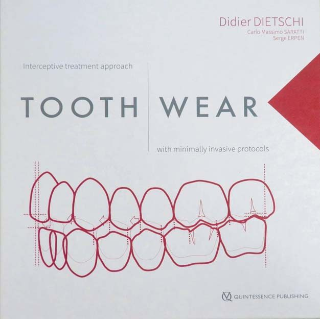
Усім відомо, що починаючи з 2006 року і аж до пандемії Навчальний центр «Аполлонія» щороку організовував навчання групи стоматологів за програмою Дідьє Дічі з реставрації зубів композитами у «Женева Смайл Центрі», і на XIV сторінці передмови можна побачити фото саме з нашого курсу. Принаймні останні 10 років темою нашого чотириденного курсу стала реставрація композитом стертих зубів…
Оцінити, прорецензувати книгу «Стирання зубів» мені, з одного боку, легко, тому що добре обізнаний з еволюцією суми знань, філософії і практики Дідьє Дічі за майже 20 років, хоч ми і рухалися паралельно! З другого боку, важко, тому що щира вдячність авторові «Стирання зубів» за бажання ділитися з колегами своїм багатим і різноманітним досвідом заважає безпристрасно оцінити деталі розгляду вкрай важливого напрямку в реставраційній стоматології, в якому працюю і сам. І особливо важко, тому що багаторічне професійне спілкування переросло в особисту дружбу…
І все ж спробую, керуючись, однак, процитованим вище латинським гаслом!
Дідьє Дічі — доктор медицини, приват-доцент Женевського університету, доктор філософії, почесний професор Українського медичного коледжу (приємно, що автор згадав про це, хоча насправді є почесним професором Української медичної стоматологічної академії — тепер Полтавського державного медичного університету), власник приватної клініки і навчального центру «Женева Смайл Центр».
Я досить часто звертаюся до першої книги Дідьє Дічі у співавторстві з Роберто Спреафіко «Адгезивні безметалові реставрації», яка побачила світ у далекому 1997 році і, незважаючи на свій невеликий об’єм, стала своєрідною біблією для стоматологів, що реставрують зуби композитними матеріалами…
Цьогорічна ж книга вражає своїм обсягом — майже 850 сторінок в одному томі, де кожен стоматолог знайде для себе розділ за улюбленим напрямком реставрації зубів у діапазоні від прямої реставрації композитом у вільній техніці до лабораторної реставрації керамікою і CAD/CAM!
Варто відзначити різноманітний і вишуканий художній дизайн сторінок, розворотів, притаманний саме Дідьє Дічі, і цей дизайн добре впізнаваний для тих, хто знайомий з його лекціями. Я захоплююсь цим дизайном і навіть переймаю деякі його елементи для своїх власних презентацій…
«Стирання зубів» Дідьє Дічі, Карла Массімо Саратті і Сержа Ерпе складається з передмови і 8 розділів з підрозділами. Дуже важливо, що після кожного розділу автор подає вичерпний список рекомендованої літератури для подальшого вивчення відповідної теми.
Діагностика і прогнозування стирання зубів
Розділ розпочинається із розгляду причин і наслідків патологічного стирання зубів (ерозія, атриція і абразія, абфракція), котрі, як правило, поєднуються в кожному клінічному випадку, маючи різну інтенсивність у різні часові проміжки.
Для кожної причини стирання зубів або комбінації причин характерні свої ознаки у вигляді ямок на оклюзійній поверхні, сплощення поверхонь, утворення фасеток, укорочення ріжучих країв, формування дефектів по шийках зубів, оголення дентину. Стирання зубів може бути початковим, помірним і вираженим; у молодому віці, у дорослих і в похилому віці; з доброю стійкістю зубів до стирання, обмеженою або поганою.
Далі на кількох оглядах клінічних випадків продемонстрована клінічна картина початкового стирання зубів внаслідок атриції і внаслідок ерозії, помірного і вираженого стирання зубів внаслідок ерозії і внаслідок атриції, комбінації ерозії та атриції, внаслідок абфракції, прогресуючого стирання зубів та вираженого стирання зубів у похилому віці.
Як на мене, то всі проаналізовані клінічні випадки — з вираженим, якщо не драматичним, стиранням зубів і значною деформацією прикусу внаслідок втрати анатомічної форми зубів. Цікаво, що женевських пацієнтів відрізняє від полтавських наявність значної кількості амальгамових реставрацій...
Стратегії лікування
Вибір клінічної стратегії, включаючи превентивну, на думку автора, залежить від домінуючого механізму і вираженості стирання зубів, а також супутніх факторів, таких як ураження зубів карієсом, пародонтальні проблеми, стан попередніх реставрацій, а також соціально-економічний статус пацієнтів.
Превентивні стратегії полягають в усуненні причин, що призводять до стирання зубів, контролюючи, наприклад, харчування і дієтні обмеження, лікуючи шлунково-стравохідний рефлюкс або грижу стравохідного отвору діафрагми, захищаючи капою зуби за наявності парафункцій та ін.
У клінічному випадку, що ілюструє можливості превентивної стратегії у пацієнта з ознаками початкового стирання зубів, особливу роль відведено захисній капі на нижній зубний ряд, з якою пацієнти почуваються комфортніше, ніж із поширеною капою на верхній зубний ряд або сплінтом. Ми дотримуємося такої ж тактики!
Інтерцептивні стратегії полягають в усуненні незначних, проте прогресуючих дефектів зубних тканин, що виникли внаслідок патологічного стирання, таким чином запобігаючи порушенню функцій, які потребуватимуть значних зусиль у реабілітації. Інтерцептивні стратегії передбачають передусім застосування прямих технік мінімально інвазивної реставрації, включаючи техніку без препарування зубних тканин, а також різних технік молдингу (техніка реставрації з використанням різних шаблонів).
Реставраційні стратегії потрібні тоді, коли внаслідок стирання виникли значні дефекти зубів або неможливо взяти під контроль етіологічні фактори (булімія, анорексія) і відновлення втраченої анатомічної форми зубів вимагає значного препарування. У таких випадках потрібне застосування технології CAD/CAM і непрямої техніки в аналоговому чи цифровому протоколах для відновлення зубів, прикусу і функцій.
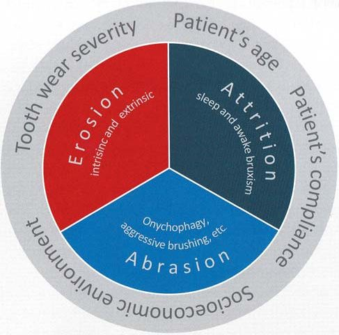
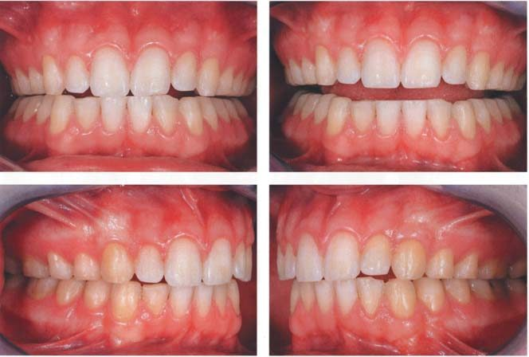
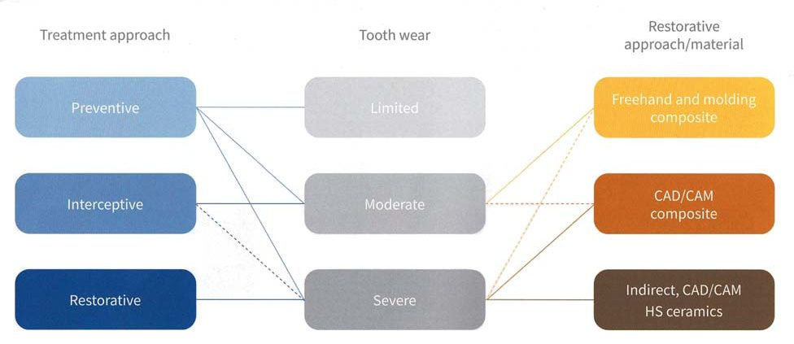
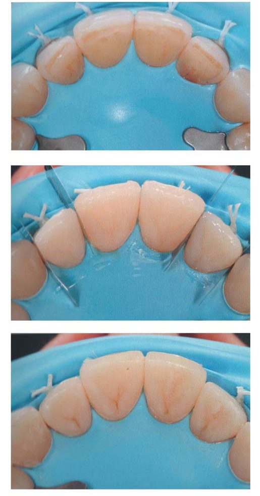
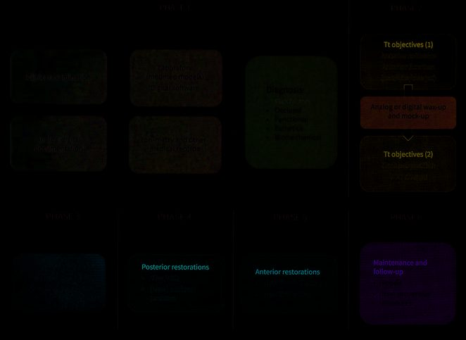
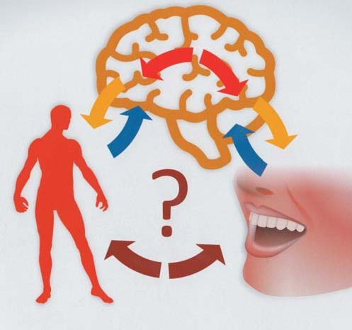
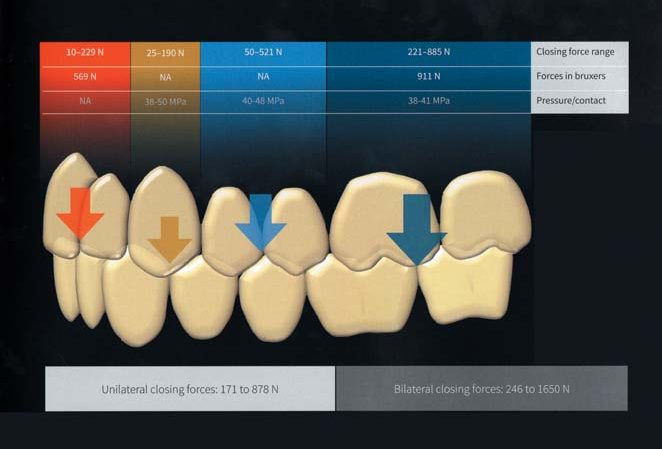
Усі три рівні стратегії лікування стирання зубів можуть застосовуватися комплексно, у гібридних стратегіях. Докладніше про застосування гібридних стратегій можна прочитати у статті Дідьє Дічі, надрукованій у «ДентАрті» № 2 за цей рік.4
Кілька клінічних прикладів детально ілюструють гібридне застосування клінічних стратегій при різній вираженості стирання зубів.
Узагальнюючи стратегії лікування стирання зубів, автор подає схему етапів і послідовності лікувального процесу, яка просто і зрозуміло демонструє 6 фаз реабілітації пацієнтів зі стиранням зубів. Можна назвати цю схему універсальним протоколом для всіх і для всього, що стосується реставрації зубів будь-яким способом!
У прямій техніці Дідьє Дічі подає послідовність відновлення стертих зубів по секстантах: спочатку зуби нижніх правого і лівого бічних секстантів, далі зуби верхніх правого і лівого бічних секстантів, потім зуби нижнього переднього секстанта і на завершення — зуби верхнього переднього секстанта. Після кожного етапу робиться функціональна перевірка.
Ми в «Аполлонії» дотримуємось іншої послідовності: спочатку всі зуби верхнього зубного ряду (ікла, бічні зуби справа і зліва, передні зуби), а потім усі зуби нижнього зубного ряду (бічні зуби справа і зліва, ікла, передні зуби).2 А Франческа Вайлаті відновлює стерті зуби, починаючи з верхніх і нижніх передніх зубів.3
Урешті-решт, головне — кінцевий результат, який полягає у відновленні анатомічної форми всіх зубів і нормалізації всіх функцій, які залежать від зубів і прикусу.
Реставраційні матеріали, що мають колір зубів, можна поділити на три категорії: полікристалічна кераміка — циркони, різні види склокераміки і композити у двох підкласах (традиційні, призначені для прямої реставрації, і нові, в яких смолою інфільтрована скляна структура і які призначені для непрямої реставрації або реставрації CAD/CAM).
Автор подає в таблицях докладні технічні дані про всі три групи реставраційних матеріалів і робить висновки про застосування їх для відновлення стертих зубів.
Напівпрозорі цирконові матеріали ідеальні для повних непрямих реставрацій, таких як коронки і мости, для часткових непрямих реставрацій можуть використовуватися склокераміка і CAD/CAM кераміка у випадках, пов’язаних з вираженими парафункціями та прогресуючим стиранням зубних тканин. В усіх інших випадках обмеженого або середнього стирання зубних тканин рекомендується пряма реставрація композитом — завдяки простій техніці виконання, не- або малоінвазивності, відновлюваності, низькій вартості і підтвердженій довговічності. Важливе рецензійне доповнення: пряма техніка реставрації вимагає досконалих мануальних навичок оператора, а талановитих стоматологів не так уже й багато… Тому Дідьє Дічі в персональній комунікації завжди підкреслює, що його рекомендації скеровані на стоматологів із середнім рівнем мануальної майстерності, і він не заперечує проти розширення показань для прямої реставрації композитом талановитими стоматологами!
Адгезивну техніку автор подає універсальною схемою для всіх реставрацій, ілюстрованою зображеннями СЕМ і зображеннями матеріалів, якими користується сам. Золотим стандартом Дідьє вважає 2-крокову самопротравлюючу техніку (наприклад, Clearfil SE bond) та 3-крокову техніку тотального протравлювання (наприклад, Optibond FL) і особливо рекомендує ці техніки для непрямих реставрацій.
Оклюзійні і функціональні фактори
Вертикальний розмір оклюзії
Стоматологічне здоров’я — ключовий індикатор загального стану здоров’я, самопочуття і якості життя! Збереження стоматологічного здоров’я передбачає врахування мультифакторної дії психологічних і фізичних факторів, що впливають на активність і функції нашої зубощелепної системи.
Основи гнатології включають концепції центрального співвідношення (CR), вертикального розміру оклюзії (VDO), переднього і бокових оклюзійних направляючих, схеми дистальних оклюзійних контактів (OCs) і взаємозв’язку детермінантів руху нижньої щелепи, балансу жувальних м’язів (MCR)... У докладному літературному огляді подано сучасні уявлення про статичну оклюзію, динамічну оклюзію і рухи нижньої щелепи, зв’язок нейропластичності та нейрокогнітивності мозку з оклюзією, парафункції, порушення скронево-нижньощелепного суглоба.
Таким чином, стирання зубів і наступне їх відновлення впливають на один, кілька або всі чинники: анатомію зубів, вертикальний розмір оклюзії, вид і позиції оклюзії. Адаптація до відновленої оклюзії починається з механо-анатомічної адаптації безпосередньо після відновлення і продовжується в короткий період адаптацією м’язів завдяки нейропластичності.
У біомеханічному сенсі на різні зуби діють різні сили, саме тому, на думку автора, є доцільною концепція «гібридної реабілітації», коли керамічними реставраціями відновлюються бічні зуби, а композитними реставраціями — передні.
І справді, у моніторингу пацієнтів із системним відновленням стертих зубів під завершення терміну служби реставрацій ми спостерігаємо найбільше зношування оклюзійної поверхні на молярах, менше — на премолярах, а от ікла зношуються швидше, ніж різці.
Прямі техніки
Концепція природних шарів є базовою концепцією в досягненні кольору реставрацій, запропонованою Дідьє Дічі ще у 1996 році і побудованою на відтворенні топографії дентину та емалі в їх природній топографії (2-шарова, або біламінарна техніка), де дентино-емалеве з’єднання виступає в ролі природного орієнтира.
Хоча ми в «Аполлонії» досягаємо кольору реставрацій у 4-шаровій концепції, яку називаємо біоміметичною, особливістю якої є наявність світлого центру, що імітує топографію і оптичні властивості предентину,1 слід визнати, що 2-шарова техніка завдяки своїй простоті стала найпопулярнішою у світі і чимало виробників пропонують саме такі реставраційні композити (наприклад, Neo Spectra ST).
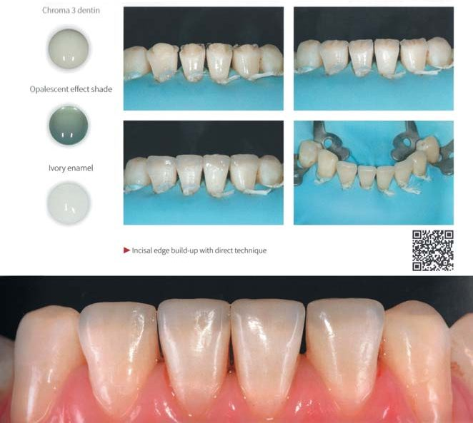
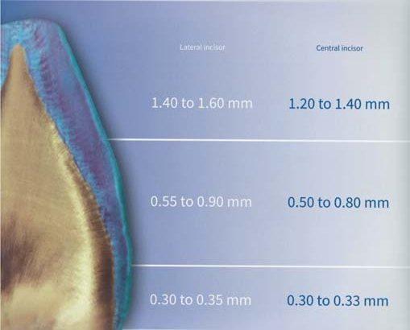
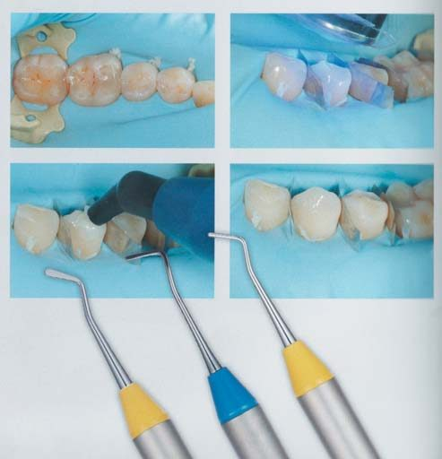
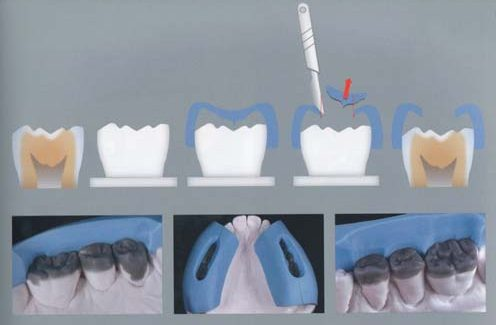
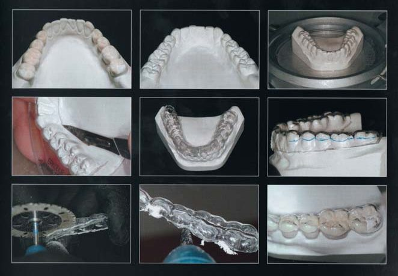
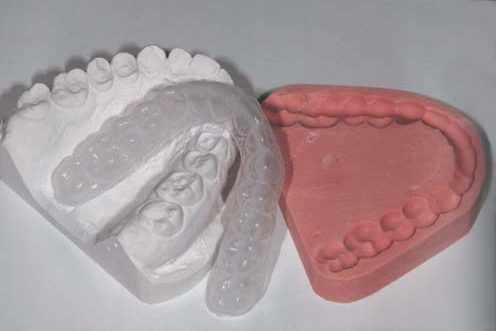
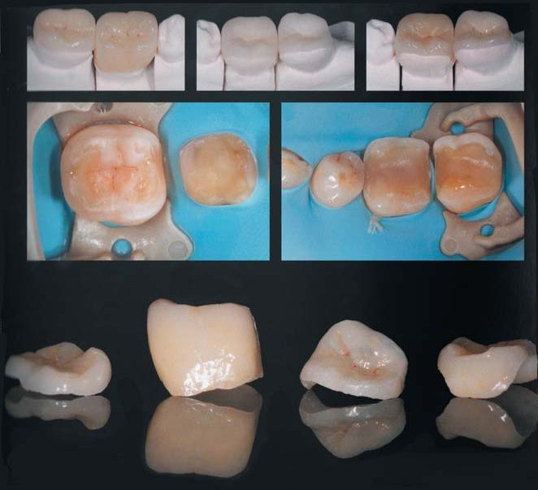
Вільна техніка для передніх зубів (freehand technique) у стратегії запобігання є фундаментальним принципом застосування прямої реставрації композитом для випадків середньої вираженості стирання зубів або у випадку фінансових обмежень. Перед реставрацією зазвичай робиться вокс-ап в лабораторії для виготовлення силіконового шаблону, який для клініциста є спрямовуючим у досягненні оптимальної довжини, форми і функції.
Три клінічні приклади, докладно ілюстровані дивовижними світлинами, демонструють крок за кроком відновлення довжини нижніх різців, довжини верхніх різців і відновлення композитними вінірами піднебінної поверхні верхніх різців.
Стратегії прямої реставрації бічних зубів передбачають вільну техніку, техніку часткового молдингу і техніку повного молдингу. Важливо для контролю висоти відновлених коронок використовувати анатомічні орієнтири, такі як оклюзійні ямки і фісури та контактні пункти і крайові гребені.
Вільна техніка (freehand technique) доцільна тоді, коли оклюзійні ямки і фісури добре збережені, а стиралися переважно горбики. Відновлення можливе, використовуючи функціональний вокс-ап і візуальний контроль. Відбудовою горбиків клініцист створює новий вертикальний розмір оклюзії. Автор зауважує, що досвідчені і майстровиті стоматологи можуть індивідуально розширювати межі застосування для цієї простої техніки, з чим важко не погодитись.
Техніка часткового молдингу для реставрацій бічних зубів передбачає виготовлення щічного і язичного шаблонів, завдяки яким клініцист може відновити висоту і позицію вершин горбиків на оклюзійній поверхні, а потім у вільній техніці добудувати оклюзійну поверхню на зразок реставрації Класу I. Для виготовлення шаблонів добре підходять надруковані моделі з цифровим дизайном. Цей метод рекомендований для обмеженої кількості клінічних випадків зі стиранням зубів середньої вираженості.
Техніка повного молдингу передбачає відновлення анатомічної форми зуба і контроль вертикального розміру оклюзії з використанням повного шаблону із прозорого силікону. Шаблони можуть бути виготовлені за моделлю, створеною аналоговим або цифровим способом. Ця техніка вимагає дуже точних і деталізованих процедур і дозволяє прекрасно відтворити анатомічну форму та нову оклюзію, проте вимагає часу і зусиль для видалення надлишків композиту. Цей метод рекомендований для випадків обмеженого або середнього стирання зубів.
Важливо мати на увазі, що відновлення висоти зубів залежить від їх позиції в зубному ряду, і якщо на других молярах відновити висоту коронки на 1 мм, то на перших молярах і других премолярах це буде 1,5–2 мм, на перших премолярах та іклах — 2–2,5 мм, а на різцях — аж 2,5–3 мм. Це так, але в міліметрах, на нашу думку, відбувається двосторонній обмін інформацією між стоматологом і зубним техніком, а клініцистові і так добре видно, які і скільки зубних тканин втрачено через стирання і які треба відновити, щоб віднайти втрачену анатомічну форму зубів. Може, саме тому Дідьє Дічі часто повторює на курсах, що правильна анатомія зубів означає правильну оклюзію, і цією істиною треба керуватись усім стоматологам!
Наприкінці розділів з вільною технікою, технікою часткового молдингу і технікою повного молдингу автор подає перелік ключових порад і вимог, що становлять майстер-протокол.
Зауважимо, що всі описані техніки прямої реставрації передніх і бічних зубів — це основа щорічного курсу в «Женева Смайл Центрі», поїздку на який організовує Навчальний центр «Аполлонія».
Шелл техніки
У прямій молдинг-техніці залишається проблемним стабільність позиції шаблону у випадку вираженого стирання зубів, тому в таких випадках пряма реставрація може бути виконана за допомогою лабораторного повного шаблону (своєрідний повний молдинг ін-лаб). У такій техніці можливе одночасне лабораторне виготовлення композитних реставрацій на моделі з наступною фіксацією окремих реставрацій на всіх зубах у клініці.
Непрямі техніки
Непрямі техніки поширеніші, ніж пряма вільна техніка реставрації стертих зубів композитом, і призначені переважно для випадків вираженого стирання зубів, а також для стоматологів з обмеженим досвідом роботи з протоколами прямої реставрації зубів.
Протягом 1990-х років, коли адгезивна техніка повністю змінила дизайн препарування зубів і фіксацію реставрацій, у непрямих техніках з’явилася низка цікавих і важливих нововведень, таких як негайна герметизація дентину, оптимізація дизайну порожнини, релокація шийки зуба (відома також як підняття глибокого краю), контрольоване адгезивне цементування.
Слід пам’ятати, що основні зусилля в реставрації стертих зубів мають бути спрямовані на найбільш консервативний варіант реставрації, що ґрунтується на підході «сектор за сектором» або навіть «зуб за зубом» через пасивне прорізування стертих зубів. Тому використання одного матеріалу для всіх зубів не має твердого обґрунтування, незважаючи на таку практику протягом багатьох десятиліть як результат обмеженого розуміння функції і біомеханіки.
Комбіновані протоколи непрямої реставрації подані автором у клінічних випадках з непрямими піднебінними вінірами і прямою реставрацією композитом, з гібридною непрямою реабілітацією, де використана і пряма техніка композитом, з тотальною непрямою реабілітацією та прямим відновленням основи стертих зубів.
Фіксація непрямих реставрацій може вплинути як на міцність та довговічність відновлених зубів, так і на самі реставрації. Слід врахувати міцність і товщину реставрації для вибору матеріалу для фіксації: чим міцніший матеріал реставрації, тим більша ймовірність використання реставраційного композиту світлової полімеризації замість адгезивного цементу у відповідності з концепцією контрольованого адгезивного цементування.
CAD/CAM техніки
Технології CAD/CAM швидко поширилися по всьому світу, і все більше клінік користуються цифровими сканерами. Протокол CAD/CAM включає три кроки: отримання цифрового відбитка, створення віртуальної реставрації і виробництво реставрації.
Незважаючи на всі переваги, технології CAD/CAM все одно мають свої обмеження: фрезеровані блоки дають багато відходів, а інструменти для фрезерування швидко зношуються і потребують частої заміни, поверхня фрезерованих реставрацій потребує фінішної обробки вручну, моноколірні блоки не забезпечують достатній естетичний вигляд без додаткового фарбування, а ізотропна структура реставрацій поступається природній анізотропній структурі зубних тканин у протидії оклюзійному стресу (часткові сколи і поломки CAD/CAM реставрацій досить поширені).
На жаль, поки що 3D принтери не дозволяють виготовляти достатньо міцні реставрації для стертих зубів. Клінічні приклади демонструють послідовний процес CAD/CAM реставрації частини стертих зубів і тотальну CAD/CAM реставрацію з використанням композитних блоків.
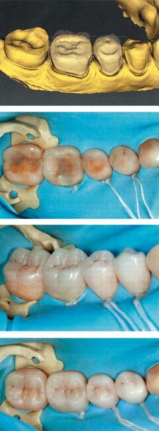
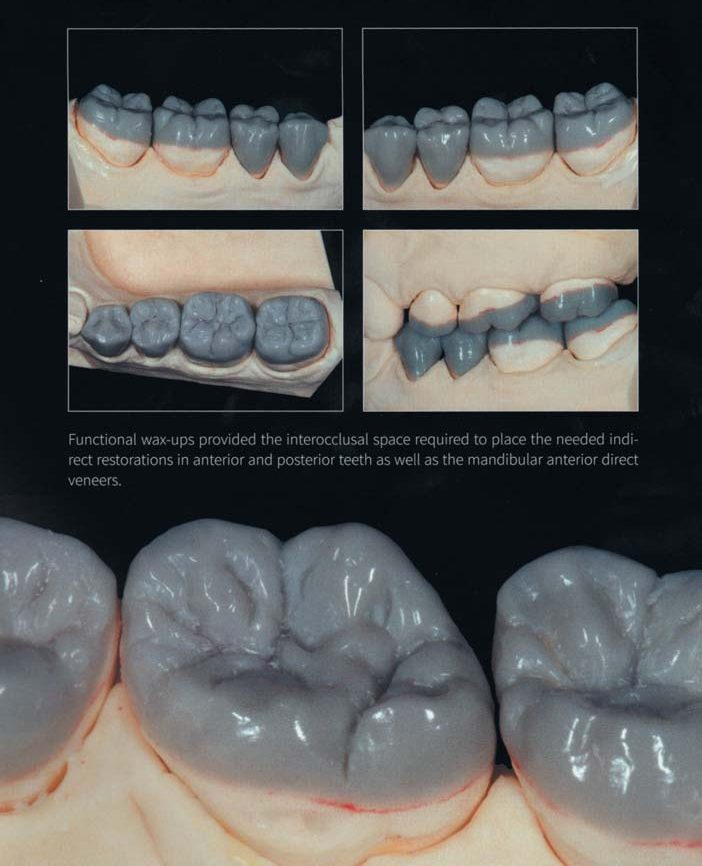
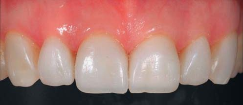
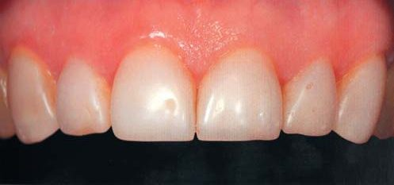
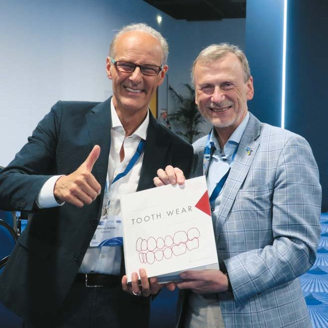
Довговічність та обслуговування реставрацій
Довговічність композитних реставрацій продемонстрована з результатом спостереження за окремими клінічними прикладами 8 років, 9, 10, 12, 11, 13 років і навіть 23 роки (останній клінічний випадок цікавий тим, що одне з фото воскової моделі зубів є на обкладинці книжки «Адгезивні безметалові реставрації» 1997 року, що підтверджує істинність цього задокументованого клінічного випадку).5,6 Усі 10 клінічних випадків з різними клінічними ситуаціями залежно від вираженості стирання зубів проліковані в різних описаних техніках і в цілому підтверджують тезу про те, що всі реставрації є тимчасовими і з часом потребують реновації або й повної заміни.
Для захисту реставрованих зубів від подальшого механічного стирання у пацієнтів з надмірною парафункціональною активністю вкрай потрібна як нічна, так і денна захисна капа, тому що окрім ботулінотерапії для зниження парафункціональних сил і гіпертрофії м’язів, жоден препарат не усуває бруксизм і патологічне стискання зубів. Ми також притримуємося такої позиції і вважаємо, що за нинішніх стресогенних часів капи потрібні всім і вдень, і вночі!
На завершення Дідьє Дічі подає огляд літератури на тему довговічності реставрацій для відновлення стертих зубів, зауважуючи відсутність єдиних критеріїв успішності реставрацій, через що дані різних літературних джерел важко порівняти.
Стирання зубів — складне явище, оскільки воно виникає внаслідок фізіологічних і патологічних процесів, передбачає складну взаємодію фізичних, неврологічних і психологічних процесів, тобто це багатофакторна проблема за своєю природою! Тому, коли справа доходить до прийняття клінічних рішень стосовно конкретного пацієнта з патологічним стиранням зубів, відносна «ірраціональність» і «непереконливість» науки не залишає лікарям-практикам, на думку автора, іншого вибору, окрім як скористатися своїм власним досвідом, здоровим глуздом та логікою для вибору оптимальної лікувальної стратегії (я б додав, що на власну професійну відповідальність за вибір і результати лікування в термін мінімум 10 років).
Що у підсумку…
Завершуючи огляд неймовірного видання «Стирання зубів» Дідьє Дічі, Карла Массімо Саратті і Сержа Ерпе, хочу підтвердити істинність пережитого, зробленого, сфотографованого і викладеного автором/авторами.
Це короткий огляд з моїми акцентами, і я сподіваюся, що читачі отримали певне уявлення про стратегії реабілітації пацієнтів з патологічним стиранням зубів, спираючись на літературні дані і досвід авторів книги, і для подальшого вивчення цього перспективного напрямку реставраційної стоматології рекомендую кожному талановитому стоматологові в Україні перечитати цю книгу самостійно. Отже, на щастя, мені не треба жертвувати дружбою з Дідьє Дічі заради Істини!
Література
- Радлинский С. Реставрационные конструкции переднего и бокового зубов // ДентАрт. — 1996. — № 4. — С. 22–29.
- Радлинский С. Системное восстановление высоты всех зубов при повышенной стираемости // ДентАрт. — 2007. — № 3. — С. 38–48.
- Вайлати Ф., Белзер У. Композитные небные виниры для восстановления зубов с выраженной стираемостью // ДентАрт. — 2013. — № 1. — С. 33–40.
- Дічі Д. Сучасне лікування і ведення пацієнтів зі стиранням зубів // ДентАрт. — 2023. — № 2. — С. 4–17.
- Dietschi D., Spreafico R. Adhesive Metal-free Restorations. — Quintessence Publishing Co, 1997. — 200 p.
- Dietschi D., Saratti C. M., Erpen S. Tooth wear, Interceptive treatment with minimally invasive protocols. — Quintessence Publishing Co, 2023. — 841 p.